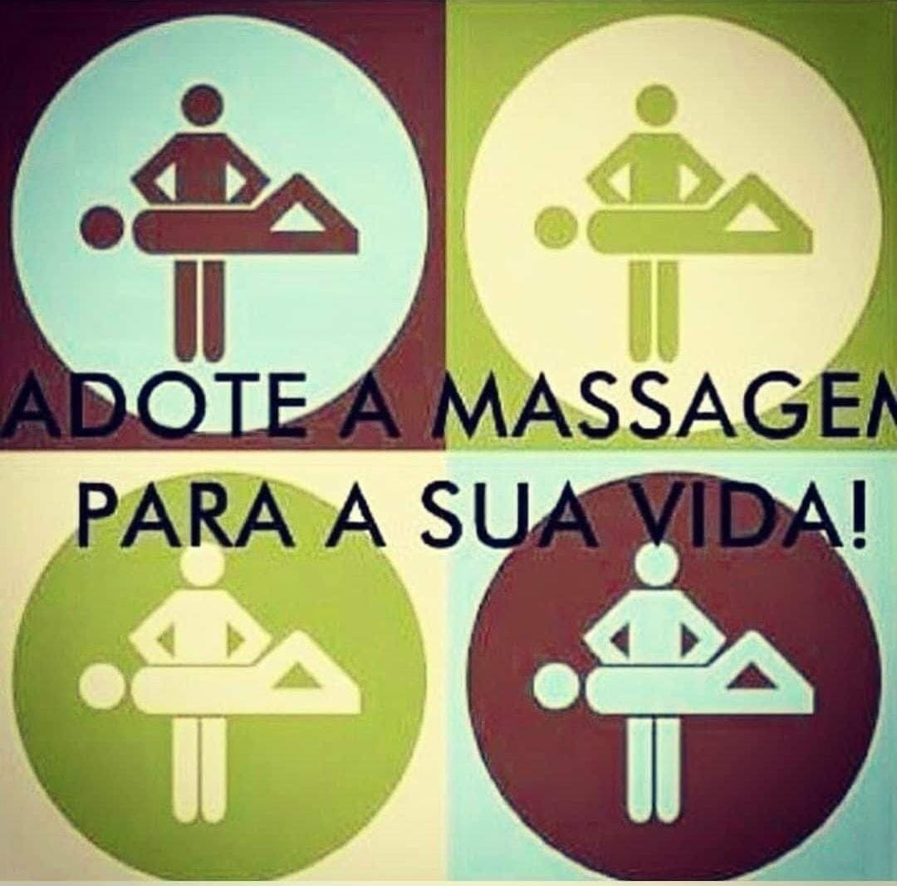

A massoterapia é uma abordagem terapêutica que se baseia na aplicação de diversas técnicas de massagem para promover o bem-estar físico e emocional.
Ao longo de uma sessão de massoterapia, o profissional, chamado massoterapeuta, utiliza uma variedade de movimentos e pressões manuais sobre os tecidos moles do corpo, como músculos, tendões e ligamentos. Essas manipulações têm o propósito de aliviar a tensão muscular, melhorar a circulação sanguínea, reduzir o estresse e promover uma sensação geral de relaxamento.
